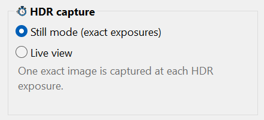
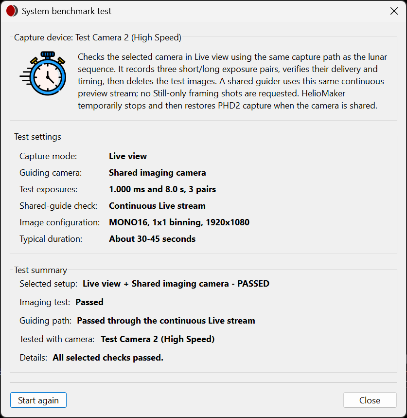

Capture mode: Still versus Live
Choose and qualify the camera path for lunar HDR imaging.
What the preference controls
| Mode | Behavior | Check during rehearsal |
|---|---|---|
| Still mode (exact exposures) | Captures one exact image at each requested HDR exposure. | Still-mode delivery, long exposures, transition overhead and shared guide frames. |
| Live view | Uses the continuous stream. Short HDR steps may capture several frames while the stream reaches the requested exposure. | Exposure settling, the delivered frames at each step and the achievable interval. |

Run the lunar System benchmark
- Connect the intended SharpCap camera and select the camera/guiding configuration and image settings in Plan preferences.
- Open System benchmark test.... Check the camera identity, mode, short/long test exposures and shared-guide check.
- Click Start and let the test finish. It exercises three short/long exposure pairs. Shared Still setups also test long no-file guide frames.
- Read the Test summary. Resolve any failure and retest the selected configuration before the eclipse.

The test writes temporary images and removes its test images afterward. It may temporarily stop and restore PHD2 capture. Let it complete before starting another operation on the camera.
The benchmark is refused while another eclipse run owns the imaging system, or while a capture sequence, an SHG scan or a PHD2 calibration uses the same camera, mount and guiding. The message names what to stop or close first.
The standard recipe is three pairs at 20 ms and 8 seconds, plus three 3.5-second no-file guide frames for Shared Still setups. These probes are independent of the plan's base exposure, gain, guiding exposures and exposure ceiling. Allow approximately one to two minutes; the summary reports the measured duration for your camera.
After a benchmark the planner allows generously for each frame, so the suggested interval can be longer than the exposures alone. Measurements from earlier versions are reused with the same allowance; changing the plan's exposures still does not invalidate the equipment test.
Passed results remain usable after exposure edits and after restarting HelioMaker. A changed camera, capture resolution, data format or binning requires matching equipment evidence. Switching Still/Live or shared/separate guiding selects the corresponding measured capability; any missing capability still requires a test. Save and rehearse the configuration you intend to run.